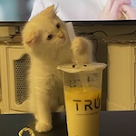

|
My name is Mina Wu. I was born in Taiwan and grew up in Hsinchu(Taiwan), Vancouver(BC), and Toronto(ON).
Thanks to my diverse background, I am capable of reading, writing, and speaking fluently in both
English and Chinese.
Despite majoring in Computer science and enjoy problem-solving,
I have numerous other interests.
These include painting, trying out new food, photography, and learning new sports!
(More about this on the Fun Corner page)
Ps. I have an adorable cat named 小豆花(Dodo)

Education
University of Toronto - Honours Bachelor of Science
Computer Science Specialist (Expected to graduate in 2027), CGPA: 3.83
Abbey Park High School -
High School Diploma
Work Experience
Nuts Institue - Teacher Assistant
Worked as a TA in the classroom teaching fundamental Java programming
Accomplishments
- Successfully provided one-on-one teaching to students who are struggling academically through
targeting their weaknesses with appropriate teaching methodologies
- Effectively bridged language barriers by providing bilingual support to students,
answering questions and clarifying concepts in both Chinese and English
- Facilitated smooth class proceedings
Making and packaging pizzas and breads while delivering customer service
Accomplishments
- Received numerous compliments for the pizzas
- Successfully trained new team members, ensuring they were equipped to excel in their roles
- Effectively handled cashier duties
Awards
- University of Toronto Scholars - Academic merit with value of $7500
- Subject Award - Grade 12 Mathematics of Data Management
- Subject Award - Grade 12 Communication Technology
- Subject Award - Grade 11 Functions
- Subject Award - Grade 10 Introduction to Computer Studies
- Subject Award - Grade 10 Principle of Mathematics
|